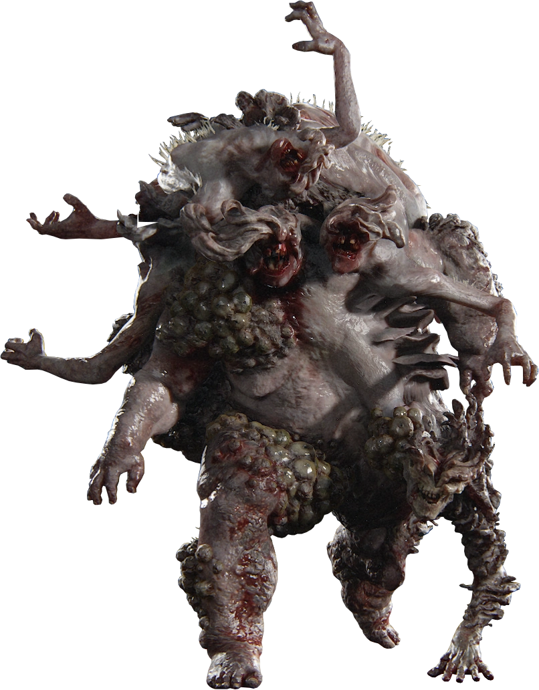
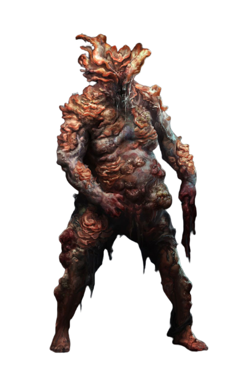
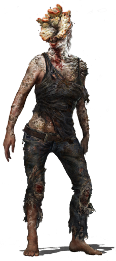
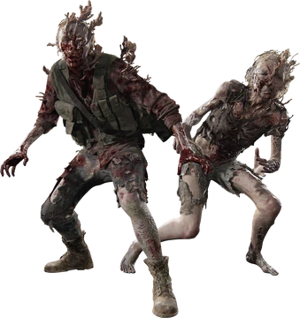
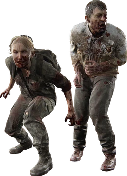

Who is Joel Miller
Joel Miller es el protagonista del primer
juego de the last of us, y un personaje secundario
para la segunda entrega del mismo.
Joel Miller es un estadounidense que sobrevio al
brote de la infección del hongo Cordyceps, brote
en el cual su hija Sara Miller muere.
Tras el brote Joel se comvirtio en un contrabandista,
un dia tiene como mision llevar a salvo a Ellie Willams
a una base de las luciernagas(Grupo terrorista).
Who is Ellie Willams
Ellie Willams es una supervivente nacida
pos-infección del hongo Cordyceps.
Ellie Willams es la unica humano inmune
a la infección del hongo Cordyceps. Su
madre es Ashley Johnson(muerta), se desconoce
quie es su padre.
Actualmente vive en un poblado de nombre
Jackson city.

Who is Tomy Miller
Tomy Miller es el hermano menor de Joel Miller, tras el brote del hongo Cordyceps Tomy se mantuvo junto a su hermano los primeros años, pero al cabo de un tiempo Tomy se unio al grupo terrorista las luciernagas, pero al cabo de un tiempo tabien abandono, para finalmente cofundar el poblado Jackson city.
Enemies
- Rat King
- Bloater
- Clicker
- Stalker
- Runner